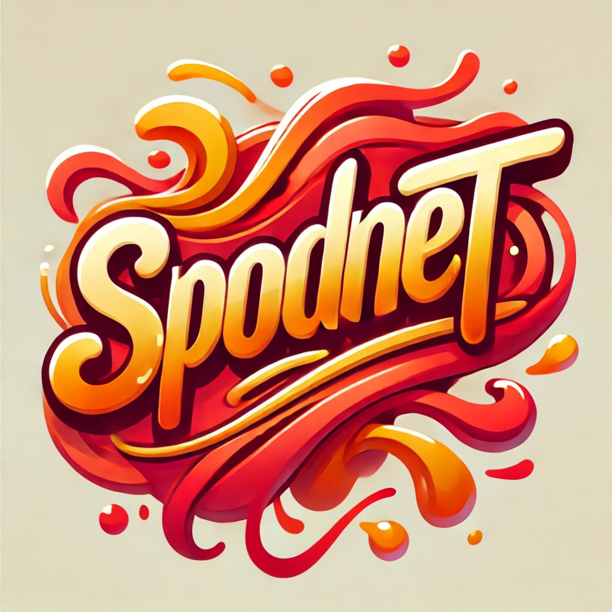
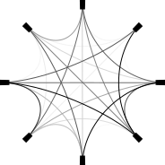
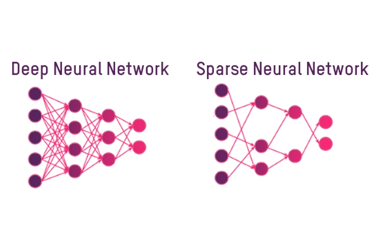

|
Can Pouliquen
PhD candidate, Engineer
News: I'm actively engaging with researchers and engineers in the industry and research institutions about working on large-scale deep learning systems in Switzerland.
Don't hesitate to contact me for a quick chat if you think we might be a good fit ! :-)
Hello, I'm a final year PhD student in machine learning at the Ecole Normale Supérieure de Lyon
under the supervision of Mathurin
Massias, Titouan
Vayer and Paulo
Gonçalves in the Inria OCKHAM team led
by
Rémi
Gribonval.
My research interests lie at the intersection of deep learning, optimization and statistics.
I also have a strong interest in software engineering and am very keen on Python.
Outside of research, I enjoy long-distance mountain running, weighted calisthenics and various types of outdoor activities.
Email /
CV /
Scholar /
Github /
Linkedin
|
|
Research
I work on machine learning methods for structure discovery. Currently, I am trying to bridge the gap between optimization-based approaches and deep learning-based
approaches to do so.
|
|

|
Schur's Positive-Definite Network: Deep Learning in the SPD cone with structure
Can Pouliquen,
Mathurin Massias,
Titouan Vayer
ICLR, 2025
paper
/
code
We introduce SpodNet, a deep learning layer that guarantees outputs as SPD matrices with additional controlable structure like sparsity.
|
|

|
Implicit
differentiation for hyperparameter tuning the
weighted Graphical Lasso
Can Pouliquen,
Paulo Gonçalves,
Mathurin Massias,
Titouan Vayer
GRETSI, 2023
paper
We design an algorithm for computing optimal hyperparameter(s) of the Graphical Lasso by solving a bi-level optimization problem.
|
|

|
Can sparsity improve the privacy of neural networks ?
Antoine Gonon,
Léon Zheng,
Clément Lalanne,
Quoc-Tung Le,
Guillaume Lauga,
Can Pouliquen
GRETSI, 2023
paper
We investigate whether sparsifying the weights of neural networks improves their robustness against membership inference attacks.
|
|
Programming
|
Around 5 years of experience with Python in prototyping and development in both research and industry environments.
Proficient in various frameworks (PyTorch, NumPy, scikit-learn, SciPy, etc.) and version control (Git, GitHub).
Experienced with development on computational clusters and GPUs.
Around 2 or 3 years of experience with C in low-level embedded systems development in academic and industry environments
Prior practical experience with C++, Rust, MATLAB, Assembly
|
|
Reviewing
|
NeurIPS 2023, 2024
ICLR 2024
ICML 2024, 2025
Electronic Journal of Statistics 2025
Gretsi 2023, 2025
|
|
Teaching
|
ENS de Lyon: Convex optimization M1 (2023-2024)
TA of Mathurin Massias,
12h
CPE Lyon: Optimization algorithms M1 (2023-2024)
TA of Marion Foare,
20h
Ecole Centrale de Lyon: Probability theory L3 (2023-2024)
TA of Céline Helbert and Christophette Blanchet, 32h
|
|
Spoken languages
|
French, Turkish: mother tongues
English: full proficiency
German, Spanish: working knowledge, I've passed B1 exams in both
|
E-mail: can \dot\ pouliquen \at\ ens-lyon \dot\ fr
Website's template from here.
|
|
{kind=link}